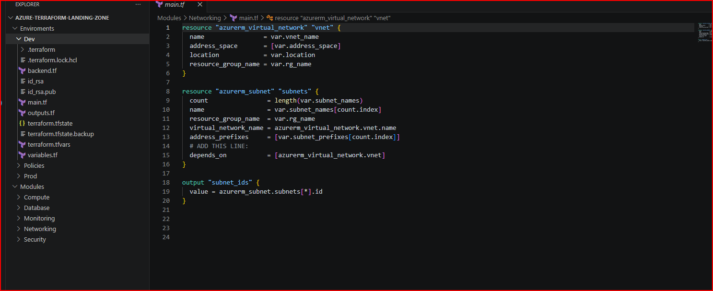

Terraform state files are among the most sensitive assets in Infrastructure-as-Code environments because they frequently contain infrastructure relationships, deployment metadata, networking configurations, and potentially sensitive operational data.
Terraform state acts as the operational source of truth for deployed infrastructure. During deployments, Terraform tracks infrastructure mappings, dependencies, configurations, and operational relationships through state management.
If improperly secured, state files can become high-value targets for attackers because they may reveal internal architecture patterns, networking structures, service relationships, storage details, and sensitive deployment information.
Enterprise Terraform deployments should implement layered controls to reduce risk exposure and strengthen governance maturity across Infrastructure-as-Code workflows.
Store Terraform state remotely using secured Azure Storage Accounts with RBAC enforcement, private endpoints, restricted access policies, and centralized governance.
Ensure encryption-at-rest and encryption-in-transit are enabled for all Terraform state operations and backend storage services.
Restrict state access using role-based access controls and minimize administrative permissions across automation identities and deployment pipelines.
Integrate monitoring, logging, and threat detection capabilities to improve visibility into Terraform operations and unauthorized access attempts.
Terraform security is no longer limited to protecting deployment pipelines alone. State management has become a critical component of enterprise cloud governance and Infrastructure-as-Code security strategy.
Organizations adopting Terraform at scale should treat state protection as foundational security architecture — not an operational afterthought.
Let’s discuss secure Infrastructure-as-Code architecture, governance strategy, and enterprise cloud security design.
Contact Me